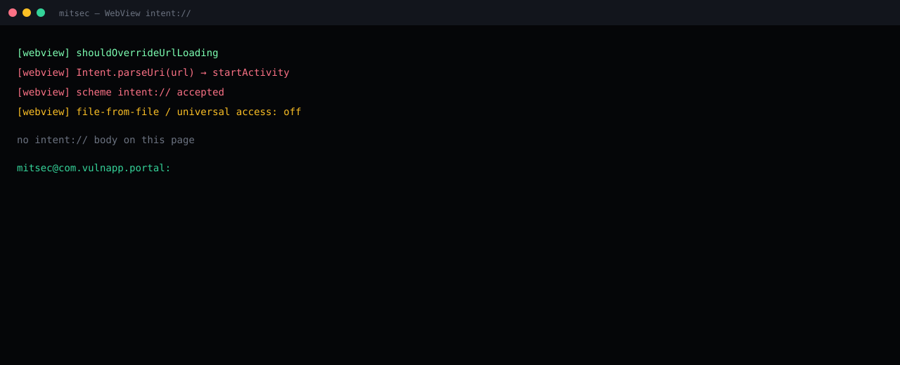

A page inside the WebView could ask the app to start an Intent.
Hook the client override on an authorized lab build.
Intent.parseUri(url) → startActivity. intent:// accepted.
Allow https only. Never parseUri a document URL into startActivity.
Summary
Lab package com.vulnapp.portal used a WebView as the help / checkout surface. shouldOverrideUrlLoading took the incoming URL, called Intent.parseUri, and startActivity on the result. intent:// was not rejected. File-from-file access was off — that is a different class. This class is the bridge from document URL to IPC.
A page the WebView will render — open redirect, compromised CDN, or an in-app tab the user did not expect — can now name a component inside the portal. Non-exported activities become reachable because the WebView process is the portal.

What AndroScope printed
[webview] shouldOverrideUrlLoading [webview] Intent.parseUri(url) → startActivity [webview] scheme intent:// accepted [webview] file-from-file / universal access: off no intent:// body on this page mitsec@com.vulnapp.portal:
Why this is not “just a deeplink”
The exported gate in the other note needs an implicit Intent from another package. This sink needs a URL the WebView will load. Origin can be a redirect the app already follows. The attacker does not have to win the intent-filter race.
parseUri rebuilds extras, flags, and a component. A host allowlist on https does not apply after the scheme check is skipped.
Fix
- Override: allow
https(and your App Link host) only. Return false / load yourself. - Never
parseUria document URL intostartActivity. - If you must open a native screen from JS, use an explicit, hard-coded component and a typed bridge. Not a URL.
- Keep file-from-file and universal access off. That is table stakes, not this finding.